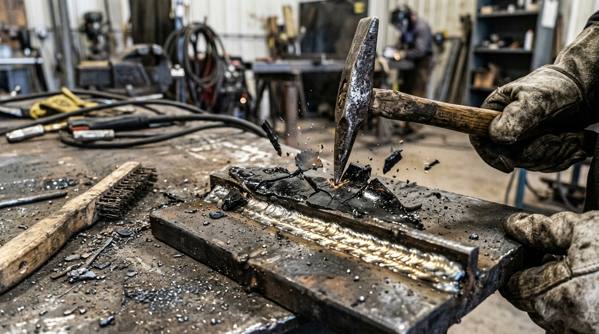
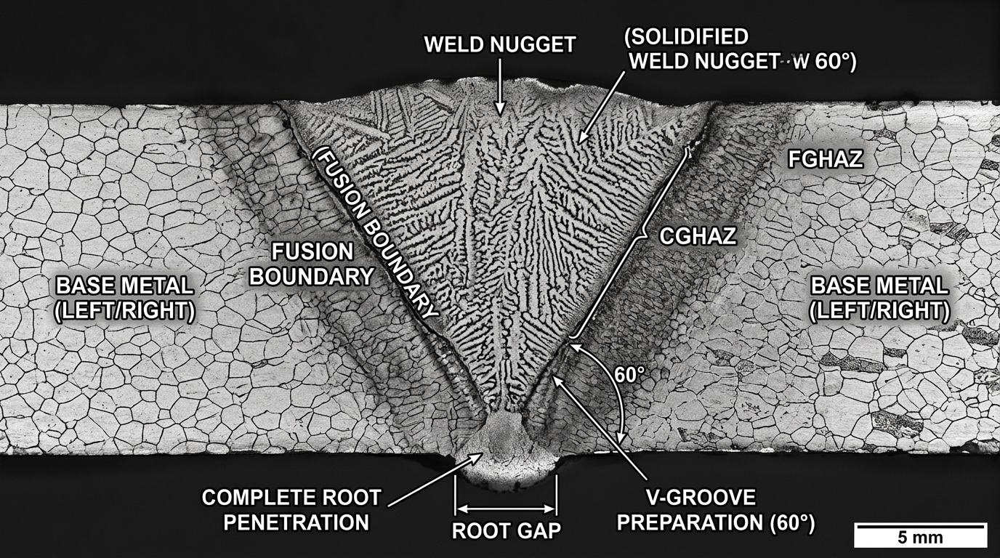
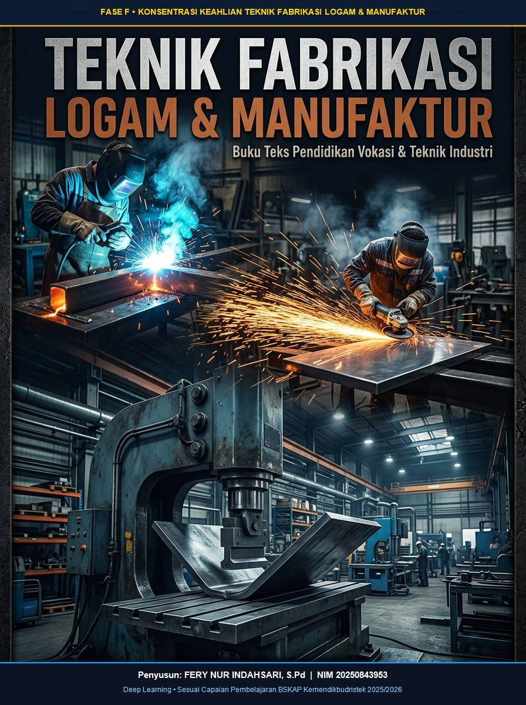

Hukum Joule (H = I²Rt), siklus 4 tahap pneumatik, dan uji destruktif pahat/kupas AWS D8.9.
Praktik RSW Lembaran SPCC 0.8-1.2 mm
Mindful Nugget Size
W4
15 & 16 OKTOBER 2026
Jeda Non-Jadwal Matrikulasi Khusus
TIDAK ADA JADWAL MATRIKULASIPekan Asesmen Tengah Semester (PTS) / Penguatan Portofolio Mandiri Siswa
Sesuai instruksi khusus, tanggal 15 dan 16 Oktober tidak dijadwalkan matrikulasi tatap muka di bengkel. Siswa dapat mengakses materi penguatan mandiri melalui Pustaka Digital & Latihan Kuis di MetalVerseFery.id.
W5
Kamis, 22 Okt 2026Pertemuan 7
7 JPL
Teori Pengelasan SMAW: Polaritas Listrik (DCEP/DCEN), Elektroda AWS A5.1 & Formula CLAMS
Pertemuan 3 & 4 (01 & 02 Okt 2026). Penekukan pelat saluran U 750 mm & end cap (Job Sheet 3A) serta penekukan presisi casing kotak SPCC 0.8 mm dengan mur las M3 (Job Sheet 3B).
Doa syukur, latihan mindfulness pernapasan K3LH (Teknik STOP), pengucapan ikrar keselamatan kerja. Menayangkan video runtuhnya struktur las jembatan; pertanyaan pemantik: "Mengapa beda arus 10 Ampere bisa menentukan keselamatan ratusan nyawa?".
2
Tahap 2: Deep Exploration & Virtual Lab Simulation
50 Menit
Bedah konsep sains di buku digital dan eksplorasi simulator interaktif MetalVerseFery (Guillotine, Termal Draglines, SMAW Arc Strike, RSW, OAW, GMAW, GTAW). Uji parameter ekstrem bebas risiko sebelum terjun ke mesin bengkel.
3
Tahap 3: Joyful Hands-on Challenge & Buddy System Praktik Bengkel
150 Menit
Eksekusi praktik bilik kerja bengkel sesuai nomor Job Sheet STEMBAYO yang terjadwal. Sistem mitra kerja berpasangan: 1 siswa sebagai juru kerja/welder, rekannya sebagai pengawas sudut & keselamatan (safety & QC observer), lalu bergantian.
4
Tahap 4: Mindful Reflection, Metacognition & 5S Housekeeping
40 Menit
Pembersihan bengkel 5S (Ringkas, Rapi, Resik, Rawat, Rajin), pemilahan limbah puntung elektroda, pengukuran dimensi dengan welding gauge, pengisian jurnal refleksi metakognitif mandiri, dan apresiasi karya rekan sebaya (Gallery Walk).
Panduan Sains Variabel Kritis: Formula C-L-A-M-S
Variabel
Kondisi Ideal
Penyimpangan Rendah/Pendek
Penyimpangan Tinggi/Panjang
Gejala Sensorik / Cacat
C - Current (Arus)
E6013 ø3.2: 80 - 110 A E7018 ø3.2: 90 - 130 A
Penetrasi dangkal, elektroda mudah menempel (sticking).
Undercut parah, manik terlalu lebar, spatter banyak.
Dengarkan dan kenali karakter busur nyala las SMAW secara langsung melalui sintesis audio.
Web Audio API
1. Busur Stabil (Ideal)
Suara mendesis halus & konstan seperti menggoreng telur (bacon sizzling sound). Panjang busur 2-3mm.
2. Busur Terlalu Panjang
Suara meletup-letup kasar tidak beraturan, desis liar, dan percikan spatter berhamburan. Panjang > 5mm.
3. Elektroda Menempel (Stick)
Suara dengung transformator (low electrical hum) saat kawat inti lengket di kawah las sebelum dipatahkan.
Atlas Visual Hasil Sambungan & Cacat Las Riil
Klik gambar untuk melihat detail inspeksi visual
Lulus Uji Visual
Manik Las SMAW Standar
Riak manik halus, penetrasi optimal.
Analisis Cacat
Spesimen Cacat Las Riil
Undercut, Porosity, Slag Inclusion.

Proses Chipping
Chipping Terak & 5S
Pembersihan kerak terak elektroda E6013.

Uji Makroetsa
Uji Penetrasi Makroetsa
Verifikasi penetrasi akar fillet joint.
Kalkulator Parameter Cerdas SMAW
Hitung rekomendasi kuat arus (Ampere), panjang busur, dan kecepatan tarik secara otomatis.
Rekomendasi Arus85 - 105 A
Panjang Busur Las2.5 - 3.2 mm
Sudut Gerak Jalan70° - 80°
Kecepatan Tarik16 - 20 cm/m
Pustaka Digital Pembelajaran
Bahan Ajar & Modul Siswa
Buku pedoman resmi, modul proyek fabrikasi serok sampah, jobsheet praktik bengkel, dan dokumen PDF pengelasan.

Buku Digital Interaktif
11 Bab Materi • 9 Job Sheet • 120 Kuis AKM
Media Pembelajaran Utama Labs
120 Soal Kuis (Kunci Dihide & Evaluasi di Akhir)
Penyusun: Fery Nur Indahsari, S.Pd
Buku Digital Interaktif: Teknik Fabrikasi Logam & Manufaktur
Buku digital interaktif resmi yang diintegrasikan langsung pada laboratorium MetalVerseFery. Memuat 11 Bab Teori Komprehensif (K3LH, Marking, Pemotongan Mekanik/Termal, Bending, OAW, SMAW, GMAW, GTAW, WPS & QC), 9 Job Sheet Praktik Bengkel berstandar industri dengan gambar kerja teknik, serta 120 butir soal latihan interaktif AKM & HOTS di mana seluruh kunci jawaban disembunyikan agar siswa berlatih secara mandiri, lalu dinilai secara komprehensif di akhir soal lengkap dengan evaluasi pembelajaran.
Simulator komprehensif fabrikasi & pengelasan yang mensimulasikan proses SMAW (*Shielded Metal Arc*), GTAW (*TIG Argon*), GMAW (*MIG/MAG*) lengkap dengan posisi pengelasan standar industri (1F–4F Fillet, 1G–4G Groove, serta 1G–6G Pipa ASME IX / AWS D1.1), Las Titik Resistansi (*Resistance Spot Welding* / RSW), OAW (*Oxy-Acetylene*), Pemotongan Plasma & Gas, serta Penekukan Bending dengan dinamika fisika real-time.
Praktik Virtual Pengelasan Bebas Risiko
Atur voltase, jenis elektroda E6013/E7018, dan gerakkan stang las di atas meja kerja virtual.
Simulasi interaktif pemotongan termal busur plasma berkecepatan supersonik (suhu inti 25.000°C) dengan kendali mandiri torch, setelan kuat arus 20–85A, tekanan udara kompresor 5.5 Bar, pengaturan jarak bebas (*standoff*), analisis garis seret (*draglines*), dan evaluasi mutu ISO 9013 untuk Baja Karbon, Stainless Steel SUS 304, dan Aluminium Al 5052.
Game Simulator: Pemotongan Mesin Guillotine Presisi
Target: 150.0 ± 0.5 mm
Posisikan lembaran pelat baja tipis sesuai garis goresan ukuran kerja serok sampah (150 mm). Pastikan APD lengkap, kunci klem penahan pelat (*hold-down clamp*), atur celah pisau (*clearance*), dan injak pedal potong!
Langkah 11. APD & K3
Langkah 22. Geser Posisi Pelat
Langkah 33. Injak Pedal Pisau
Mesin Guillotine Shearing Hidrolik (QC12Y)
Sesuai Standar Bengkel Fabrikasi SMK
Tiang Kiri Mesin
Panel Kontrol
E-STOP
400V / 50Hz
CYL-L
Balok Penekan Pisau Atas (Upper Ram)
Sudut Rake: 1° 30' • Aksi Gaya Geser Linear
CYL-R
Mata Pisau Baja T10A (Hardened HRC 58-62)
Kisi Pelindung Jari (Finger Guard) - K3LH
HOLD-DOWN CLAMPS AKTIF
0mm50mm100mm150mm (TARGET)200mm250mm
150mm
Pelat BJLS Serok SampahDimensi: 400 × 400 mm • t = 0.6 mm
Lengan Penopang Kiri
Lengan Penopang Tengah
Lengan Penopang Kanan
Tiang Kanan Mesin
TEKANAN18 MPa
CELAH PISAU0.04 mm
QC12Y Series
Pondasi Kiri (Anchor Bolt M16)
Pondasi Kanan (Anchor Bolt M16)
Posisi Stopper: 135.0 mmGeser tuas hingga tepat di garis target 150.0 mm
Foto Referensi Fisik: Mesin Guillotine Shearing Industri Bengkel
Format: Standard Sheet Metal Shearing
1. Balok Ram Pisau Atas:
Panel putih/krem dengan silinder hidrolik ganda untuk dorongan pisau potong berkekuatan tinggi.
2. Kisi Pelindung Jari Kuning:
SOP K3LH wajib mencegah tangan operator menyentuh bilah pisau saat pemotongan.
3. 3 Lengan Penopang Depan:
Menopang lembaran pelat baja ukuran lebar (misal 400x400 mm) agar tetap rata saat diumpan.
4. Meja Kerja & Mistar:
Dilengkapi rel gores presisi dan pisau bawah tetap untuk aksi gaya geser.
5. Kotak Kontrol & E-Stop:
Tombol darurat jamur merah di tiang kiri mesin untuk penghentian instan.
6. Pedal Injak Saklar:
Dioperasikan dengan kaki operator agar kedua tangan tetap bebas memegang pelat.
Studio Inspeksi Orbit 3D: Hasil Pemotongan Mesin Guillotine
ðŸ–±ï¸ Drag mouse / sentuh layar untuk putar 360° • Scroll untuk Zoom • Klik ganda untuk reset sudut
P: 400.0 mm | L: 150.0 mm | t: 0.6 mm• Siku 90.0° Bebas Burr
Zona Geser: ~30% mengkilap halus
Zona Patah: ~70% granular
Toleransi Potong: 150.0 ± 0.5 mm
Posisi:
Hasil Potongan: Presisi Tinggi!
Toleransi ±0.1mm tercapai. Tepi potong halus bebas burr.
+100 XP
Simulasi 3 - Real-time PhysicsSensory Audio & Molten Pool
SMAW Arc Strike & Travel Speed Master
Sentuh atau goreskan elektroda (*scratching technique*) di atas pelat baja untuk memantik busur api las. Jaga jarak busur nyala pada ketinggian ideal (2-3 mm) dan tarik elektroda dari kiri ke kanan dengan kecepatan konstan!
Busur Nyala:Padam (Klik/Gores)
Jarak Busur:-- mm
Kecepatan Tarik:-- cm/m
Klik & Tarik Kursor di atas pelat untuk mulai mengelas
Gunakan keahlian inspeksi visual Anda. Cari dan klik 4 titik anomali cacat las pada pelat spesimen di bawah ini: Porositas, Undercut, Spatter Berlebih, dan Slag Inclusion.
Hasil Diagnostik Inspeksi Visual:
Klik salah satu tanda tanya (?) di atas untuk memeriksa jenis cacat las.
Sistem akan memvalidasi pengetahuan standar mutu AWS D1.1 Anda.
Asesmen & Evaluasi Pembelajaran
Asesmen & Pencapaian Siswa
Rekapitulasi nilai asesmen formatif, ketepatan dimensi, kepatuhan K3LH, dan skor game simulasi.
Bank Soal Terintegrasi11 Bab • 120 Soal Kuis AKM
Asesmen Formatif & Kuis Buku Digital Interaktif TFLM
Evaluasi mandiri pemahaman siswa pada setiap bab buku ajar resmi, lengkap dengan skor otomatis dan kunci pembahasan instan.
Modul Fabrikasi & K35 Soal HOTS • 2 Kasus Industri • 4 Refleksi
Kuis Interaktif: Teknik Pemotongan Logam secara Mekanik & Termal
Evaluasi pemotongan mekanik (guillotine & notching), pemotongan termal (oxy-fuel & flashback), analisis kasus kegagalan sudut serok sampah, dan jurnal metakognisi Deep Learning terintegrasi Google Spreadsheet.
Tabel Asesmen & Capaian Kompetensi Kelas XI TPFL 1
Tahun Ajaran 2026/2027
Rank
Nama Siswa
Spesialisasi
Skor Fillet 1F/2F
Presisi Potong
K3LH Safety
Total XP
Badge
🥇 #1
Rizky Pratama
Welder Cadet
96 / 100
±0.2 mm
100%
950 XP
Master Welder
🥈 #2
Dewi Anggraini
QC Inspector
93 / 100
±0.3 mm
98%
910 XP
QC Detective
🥉 #3
Budi Santoso
Shearing Master
89 / 100
±0.1 mm
97%
880 XP
Precision Cutter
#4
Fajar Nugroho
Safety Leader
88 / 100
±0.4 mm
100%
860 XP
Safety Champion
#5
AF
Ahmad Fauzi
Tack Welder
85 / 100
±0.5 mm
95%
820 XP
Junior Welder
#6
SR
Siti Rahma
Fabricator
87 / 100
±0.3 mm
98%
840 XP
Precision Maker
#7
DS
Dimas Setiawan
SMAW Specialist
91 / 100
±0.2 mm
96%
890 XP
Arc Artisan
#8
WH
Wahyu Hidayat
Assembly Tech
84 / 100
±0.4 mm
94%
810 XP
Skilled Fabricator
Riwayat Sinkronisasi Tugas & Simulasi Siswa Aktif
Menampilkan aktivitas yang dicatat dan dikirim otomatis ke Google Spreadsheet.
Waktu
No. Absen
Nama Siswa
Kategori & Rincian Tugas
Skor
XP
Status Sinkronisasi
Belum ada tugas yang dikerjakan pada sesi ini. Mulai simulasi guillotine, busur SMAW, detektif cacat, atau kuis untuk melihat sinkronisasi.
Portal Akses Belajar
MetalVerseFery.id
Fase F TPFL
Wajib Masuk Terlebih Dahulu
Lengkapi identitas sebelum memulai praktikum simulasi pengelasan & kuis. Hasil belajar Anda akan langsung terintegrasi ke Google Spreadsheet sesuai No. Absen.
Atau Masuk Cepat Akses Guru Pengampu:
Integrasi Cloud
Konfigurasi Google Spreadsheet
Status: Siap Terhubung
Hasil simulasi & kuis siswa akan otomatis masuk sesuai No. Absen.
URL ini didapatkan setelah Anda menerapkan (Deploy) file Google_Apps_Script_Template.js di Google Spreadsheet Anda.
3 Langkah Cepat Menghubungkan Spreadsheet Guru:
Buka file template Google_Apps_Script_Template.js yang telah disediakan di folder aplikasi ini.
Di Google Spreadsheet Anda, klik menu Ekstensi > Apps Script, lalu paste kode tersebut dan klik Simpan.
Klik tombol Deploy > New deployment > Pilih jenis: Web App, atur akses ke "Anyone / Siapa Saja", lalu salin URL Web App dan paste di atas.
Buku Digital Interaktif: Teknik Fabrikasi Logam Fase F
11 Bab Teori, 9 Job Sheet Praktik • 120 Butir Soal Kuis (Kunci Dihide & Evaluasi di Akhir)